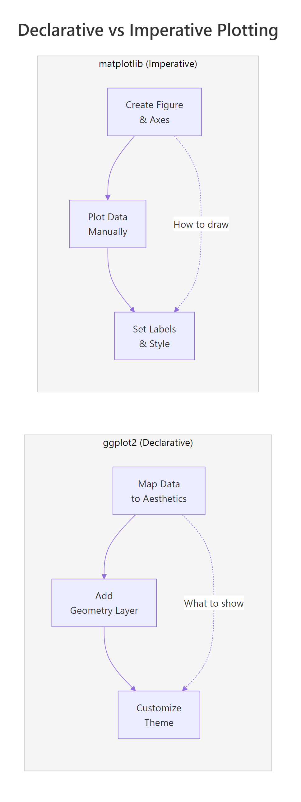
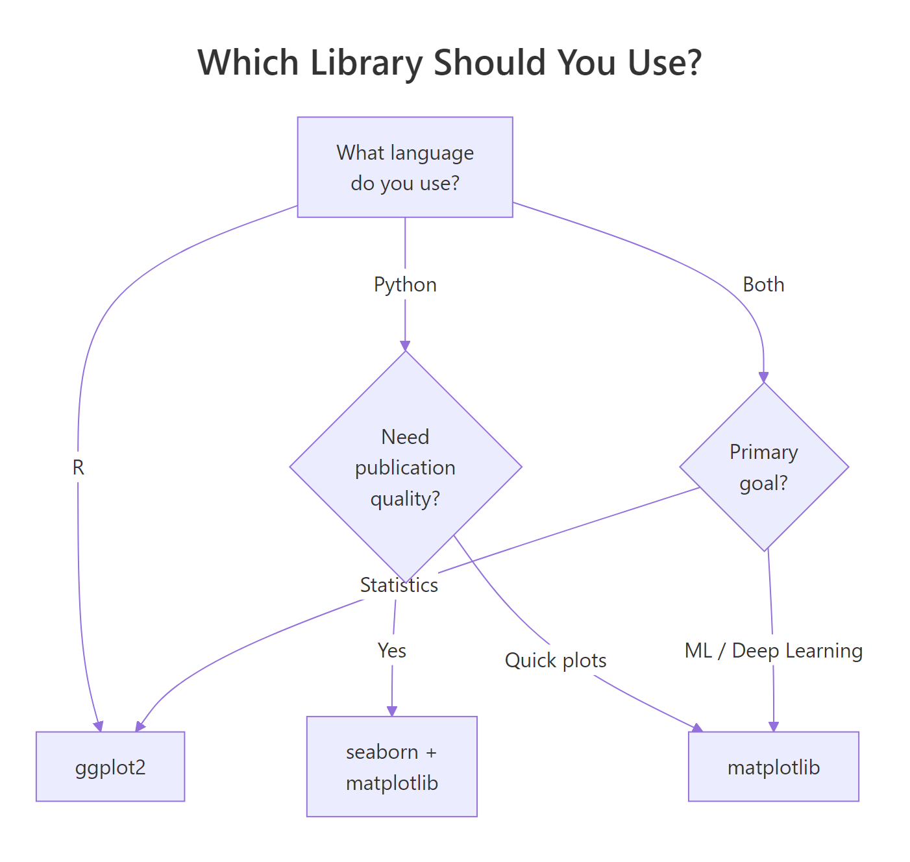

ggplot2 vs matplotlib: The Definitive Data Visualization Language Comparison: Which Is Right for You?
ggplot2 (R) and matplotlib (Python) are the two most widely used data visualization libraries in data science. ggplot2 uses a declarative grammar-of-graphics approach where you describe what to plot, while matplotlib uses an imperative style where you specify how to draw each element. This guide compares them side by side with runnable R code so you can see ggplot2's strengths firsthand.
What makes ggplot2 and matplotlib fundamentally different?
The split comes down to philosophy. ggplot2 descends from Leland Wilkinson's Grammar of Graphics, you declare mappings between your data and visual properties (position, colour, size), then add layers. matplotlib descends from MATLAB's procedural plotting model, you create a figure, call drawing commands one by one, and manually style each element.
Let's see the difference immediately. Here's a scatter plot of fuel efficiency vs horsepower, coloured by number of cylinders:
Three lines of plotting code, and ggplot2 handled the axes, legend, colours, and spacing automatically. The equivalent in matplotlib would look something like this (shown as comments since we're running R):
The core difference is this: in ggplot2, you say "map cyl to colour" and the library figures out the rest. In matplotlib, you loop through groups, plot each one, and set the legend yourself.
geom_point() to geom_boxplot() and the same aesthetic mappings produce a completely different chart, no rewriting required. In matplotlib, switching chart types usually means rewriting the entire plot.Try it: Modify the scatter plot to also map wt (weight) to point size. Add size = wt inside the aes() call and see how ggplot2 automatically creates a size legend.
Click to reveal solution
Explanation: Adding size = wt inside aes() maps the weight variable to point size. ggplot2 automatically scales the sizes and adds a legend, no extra code needed.
How does the syntax compare for common chart types?
One of ggplot2's biggest advantages is consistency. Every chart follows the same pattern: ggplot(data, aes(...)) + geom_*(). Switching from a scatter plot to a bar chart means changing one word. In matplotlib, each chart type has its own function with different parameters.
Let's walk through three common chart types, bar, histogram, and line, all using the same ggplot2 pattern.
A bar chart counting how many cars have 4, 6, or 8 cylinders:
Notice that geom_bar() counts the observations for you, you don't need to pre-compute frequencies. In matplotlib, you would call value_counts() first, then pass the result to plt.bar().
Now a histogram of fuel efficiency:
And a line chart showing daily temperature over time using the airquality dataset:
All three charts used the exact same ggplot2 structure. The only thing that changed was the geom function.
geom_histogram() with geom_density() and you get a density curve. Replace geom_bar() with geom_col() for pre-computed values. In matplotlib, each chart type often means learning a different API.Try it: Create a boxplot showing mpg grouped by cyl. Use geom_boxplot() with x = factor(cyl) and y = mpg.
Click to reveal solution
Explanation: geom_boxplot() automatically computes the median, quartiles, and outliers. Adding fill = factor(cyl) colours each box.
How do defaults and themes compare?
matplotlib's default plots are functional but plain, gray backgrounds, small fonts, and generic colour palettes. Getting a publication-ready matplotlib chart requires 10-20 lines of style configuration. ggplot2 ships with polished defaults out of the box, and its theme system lets you swap the entire look with a single function call.
Here's the same scatter plot with three different built-in themes:
The theme system is composable, you start with a complete theme and layer adjustments on top. Want theme_minimal() but with a larger title and the legend at the bottom? One line:
In matplotlib, the equivalent requires setting plt.rcParams globally or calling ax.set_* for each property individually. There's no concept of layering style changes on top of a base theme.
ggplot-style + bigger-title + bottom-legend the way ggplot2 does.Try it: Apply theme_classic() to the base plot and move the legend to "top" using the theme() function.
Click to reveal solution
Explanation: theme_classic() gives you a white background with axis lines only. Adding theme(legend.position = "top") overrides just the legend placement without affecting anything else.
Why is faceting ggplot2's killer feature?
Faceting, splitting a single chart into multiple panels by a categorical variable, is where ggplot2 leaves matplotlib far behind. In ggplot2, it's one line: facet_wrap(~variable). In matplotlib, you need to create a grid of subplots, loop through groups, plot each one separately, and manage shared axes. That's typically 10-15 lines of boilerplate.
Here's faceting in action. Let's split our scatter plot by cylinder count:
One line, facet_wrap(~cyl), created three coordinated panels with shared axes, automatic labels, and consistent styling. For a two-dimensional grid, use facet_grid():
This grid layout would require creating a fig, axes = plt.subplots(3, 3) in matplotlib, then looping through each combination, filtering data, plotting, setting titles, and synchronising axis limits, easily 20+ lines of code.
FacetGrid, the syntax is more verbose and less flexible than ggplot2's facet_wrap().Try it: Create a faceted histogram showing the distribution of mpg, split by gear. Use facet_wrap(~gear) with geom_histogram().
Click to reveal solution
Explanation: facet_wrap(~gear) splits the histogram into one panel per gear value. Each panel inherits the same bins, x-axis, and styling, ggplot2 handles the coordination automatically.
What about extensions and the ecosystem?
Both libraries have rich extension ecosystems, but they work very differently. ggplot2 extensions follow the grammar, they add new geoms, scales, or themes that compose naturally with everything else. matplotlib extensions (like seaborn) often create their own API on top.
The patchwork package lets you combine multiple ggplot2 plots with simple arithmetic operators:
That's it, + places plots side by side, / stacks them vertically. In matplotlib, you would use fig.add_subplot() or plt.subplots() with manual positioning.
The ggrepel package solves another common pain point, overlapping text labels:
ggrepel automatically positions labels so they don't overlap, a problem that matplotlib users solve with manual annotate() calls or trial-and-error offsets.
Try it: Use patchwork to stack p_bar and p_hist vertically instead of side by side. Replace + with /.
Click to reveal solution
Explanation: In patchwork, / means "stack vertically" and + means "place side by side." You can combine them: (p1 + p2) / p3 puts two plots on top and one below.
Practice Exercises
Exercise 1: Diamonds scatter with facets and themes
Create a scatter plot of the diamonds dataset (built into ggplot2) with carat on the x-axis, price on the y-axis, coloured by cut. Facet by clarity using facet_wrap(). Apply theme_minimal() and add proper axis labels and a title.
Click to reveal solution
Explanation: This exercise combines three skills: aesthetic mapping (color = cut), faceting (facet_wrap(~clarity)), and theme customisation (theme_minimal() + legend.position). The alpha = 0.3 prevents overplotting with 50K+ points.
Exercise 2: Multi-panel dashboard with patchwork
Build a two-panel dashboard of mtcars: (a) a bar chart showing mean mpg by cylinder count, and (b) a scatter plot of wt vs mpg with a linear trend line (geom_smooth(method = "lm")). Combine them side by side with patchwork and add a shared title using plot_annotation().
Click to reveal solution
Explanation: stat_summary(fun = mean, geom = "bar") computes the mean mpg per group and draws bars. geom_smooth(method = "lm") adds a linear regression line with a confidence band. Patchwork's + combines them horizontally.
Putting It All Together
Let's build a complete 4-panel dashboard from the airquality dataset, demonstrating everything we've covered: multiple geoms, themes, faceting concepts, and patchwork composition.
This entire dashboard, four chart types, consistent themes, proper labels, and a composed layout, took about 30 lines of ggplot2 code. The matplotlib equivalent would be 80-100 lines, with manual subplot management, axis formatting, and style duplication across panels.

Figure 1: Declarative vs imperative: ggplot2 describes what to show, matplotlib describes how to draw.
Summary
Here's a head-to-head comparison of every dimension that matters when choosing between ggplot2 and matplotlib:
| Feature | ggplot2 (R) | matplotlib (Python) |
|---|---|---|
| Philosophy | Declarative, describe what to plot | Imperative, specify how to draw |
| Default aesthetics | Publication-ready out of the box | Functional but plain; needs styling |
| Syntax consistency | Same pattern for every chart type | Different API per chart type |
| Chart type switching | Change the geom (1 word) | Rewrite the plot call |
| Colour by group | color = var in aes() |
Manual loop + legend |
| Faceting | 1 line: facet_wrap() / facet_grid() |
10-20 lines: subplot loop |
| Theme system | Composable layers | Global rcParams or style sheets |
| Extensions | Grammar-compatible (patchwork, ggrepel, gganimate) | Wrapper libraries (seaborn, plotly) |
| Statistical layers | Built-in: geom_smooth(), stat_summary() |
Manual: compute + plot separately |
| Learning curve | Moderate, learn the grammar, then everything clicks | Steep, many unrelated APIs to memorize |
| Best for | Statistical visualization, EDA, publications | Low-level control, custom animations, ML pipelines |
| Community size | Smaller but focused (R ecosystem) | Larger (Python ecosystem) |
The bottom line: if you work in R, ggplot2 is the clear choice, it's more concise, more consistent, and produces better-looking charts with less effort. If you work in Python, matplotlib is your foundation, but consider seaborn for statistical plots. If you use both languages, ggplot2's grammar-of-graphics approach will make you a better data visualizer regardless of which language you ultimately choose.

Figure 2: Decision tree: which visualization library fits your workflow?
References
- Wickham, H., ggplot2: Elegant Graphics for Data Analysis, 3rd Edition. Springer (2024). Link
- Wilkinson, L., The Grammar of Graphics, 2nd Edition. Springer (2005).
- ggplot2 documentation, Function reference. Link
- matplotlib documentation, Tutorials and API reference. Link
- Wickham, H. & Grolemund, G., R for Data Science, 2nd Edition. O'Reilly (2023). Link
- seaborn documentation, Statistical data visualization. Link
- Pedersen, T.L., patchwork: The Composer of Plots. Link
- Hunter, J.D., "Matplotlib: A 2D Graphics Environment." Computing in Science & Engineering 9(3), 90-95 (2007).
Continue Learning
- ggplot2's Grammar of Graphics, Understand the layered mental model behind every ggplot2 chart.
- ggplot2 Getting Started, Build your first ggplot2 charts with hands-on runnable code.
- ggplot2 Themes, Master the theme system for publication-ready, presentation-quality plots.